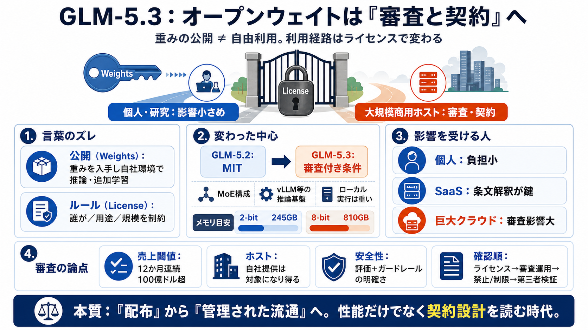

Cover
02 / 16
オープン配布の再設計
GLM-5.3
審査と契約
オープンウェイトは「自由に使える重み」ではなく、ライセンスと審査によって“利用の経路”が変わり得ます。
本スライドは、GLM-5.3公開に伴う条件変更が商用・大規模提供者へ与える影響を、読みやすく整理します。
Problem
03 / 16
言葉のズレ
Open
Weights
？
「オープンウェイト」と「自由利用」は同義ではありません。重みの公開（配布）と、利用条件（ライセンス）が別に設計されます。
公開（Weights）
学習済みパラメータ（重み）を入手し、自社環境で推論・追加学習できる形。
ルール（License）
誰が／何の用途で／どの規模で使えるかを定める契約上の制約。
Metaphor
04 / 16
配布は入口
重みは“鍵”
鍵（重み）を配っても、金庫の開け方（ライセンス）で“行ける人”が変わります。特に大規模運用の可否は審査条項に左右されます。
鍵の公開
誰でも入手可能に近い。
開け方の制約
商用ホスティング等に条件が付く。
結果
“配布→管理された流通”へ寄る。
Architecture
05 / 16
GLMの継承
性能は
継続
GLM-5.3はMoE（mixture-of-experts）構成で、GLM-5.2と基本路線を共有しつつ、推論基盤（vLLM等）に対応し得る設計が示されています。
MoE構造
複数エキスパートを切り替える方式で、計算効率と性能の両立を狙う。
運用像
推論はクラウド／推論基盤で成立しやすい一方、ローカルは計算資源が重い。
Evidence
06 / 16
変えた中心
“MIT→別”
GLM-5.2はMITライセンスだったのに対し、GLM-5.3はライセンス方針を大きく変更。商用ホスティングに事前セキュリティ審査が必要になり得ます。
前提
重みはHugging Faceで公開（オープンウェイト）。
変更点
大規模商用ホスティングは審査通過が必要、という条件が導入。
Distinction
07 / 16
誰が影響を受ける
個人は軽い
記事の読み筋では、個人利用の影響は相対的に小さい一方で、巨大クラウド事業者や“ネオクラウド”にとっては提供までのハードルが上がる可能性があります。
個人
実質的な負担は小さめ。
SaaS運用者
条文解釈で線引きが揺れる。
ハイパースケーラー級
審査要件の影響が大きい可能性。
Enumeration
08 / 16
条件の核
100億
ドル閾値
重要なのは「売上閾値」と「セキュリティ審査」です。記事では、12か月連続で売上合計が100億ドル超の企業が関わると審査が必要になり得るとされています。
対象（記事の記述）
売上：12か月連続で合計100億ドル超。
要件
モデルを“ルーティングではなく”自社ホスティング等する場合に事前セキュリティ審査。
Distinction
09 / 16
“ホスト”が鍵
APIと自社運用
審査の紐づきは主に「ホストする（ルーティングではない）」利用に向いている、と記事は述べています。適用範囲は条文解釈次第で変わり得ます。
ルーティング
OpenRouterのような仲介は、影響が小さい可能性。
ホスティング
自社で提供（派生物の商用利用を含む可能性）→審査の対象になり得る。
実務では、法務確認が不可欠です（“ホスティング”の定義、派生物の扱い等）。
Distinction
10 / 16
安全の言い方
評価は必要
Z.aiは公開前に2週間の評価・ハードニングを行い、CyberGymのようなベンチマークで高い数値を自己申告したと説明しています。一方で、許容利用（Acceptable Use）条項の明確さに疑問が残るとも指摘されています。
主張
2週間評価＋サイバー脆弱性発見ベンチマークで高い自己申告。
acceptable-use相当のガードレールが条文として見えにくい。
Process
11 / 16
確認すべき点
条文×運用
安全性の“手続き（審査）”だけでなく、“規範（禁止/制限）”がどこまで条文化されているかが説明責任になります。
審査
期間・基準・拒否事由・異議申し立て。
条文
許容利用（Acceptable Use）相当の明確さ。
検証
第三者検証の有無、再現可能性。
Evidence
12 / 16
ローカルは重い
実行コスト
記事では、ローカル実行は大規模計算が必要とされています。2-bit量子化で245GB、8-bitで810GBのメモリ要件が示され、強い計算資源がない限り難しい見込みです。
2-bit
245GB
メモリ
8-bit
810GB
メモリ
Comparison
13 / 16
“所有”の移動
市場の勝者
NvidiaのHugging Face買収やStripeのOpenRouter買収の動きが重なると、モデル配布・仲介の支配が米企業側へ移る可能性があります。逆に、モデル供給は中国ラボが増える構図になり得ます。
米：配布・仲介
Hugging Face / OpenRouterのような“導線”が握られやすい。
中：供給
学習・モデル提供そのものは中国ラボが増える可能性。
Closing
14 / 16
本質は契約
“自由”の再定義
今回の本質は性能だけでなく、オープンウェイトの“配布”が、契約管理と審査で収益化チャネルへ移行しつつある点です。
影響の中心
大規模商用ホスティング（売上閾値＋事前審査）。
読むべき順序
(i) ライセンス本文 → (ii) 審査運用 → (iii) 具体的な禁止/制限 → (iv) 第三者検証。
References
15 / 16
根拠の確認先
References
以下は本要約で参照した“話題の核”に対応する確認先です（記事本文・ライセンス全文の確認を推奨）。
Z.ai GLM-5.3（ライセンス本文）
Hugging Face上のモデルページ／LICENSE（該当条文：売上閾値・審査・ホスティング定義など）
CyberGym（サイバー脆弱性評価ベンチマーク）
Z.aiの主張で言及される評価指標の一次情報
Hugging Face（Nvidia買収のニュース）
報道・公式発表（モデル配布の“導線”の変化確認）
OpenRouter（Stripe買収のニュース）
報道・公式発表（仲介＝ルーティングの位置づけ確認）
vLLM（推論基盤の対応例）
vLLM公式ドキュメント（GLM-5.3の運用可能性の確認）
必要なら、GLM-5.3ライセンスの該当条文だけ貼ってください。スライドに条文精読の形で落とし込みます。
REFERENCES
16 / 16
References
No references found